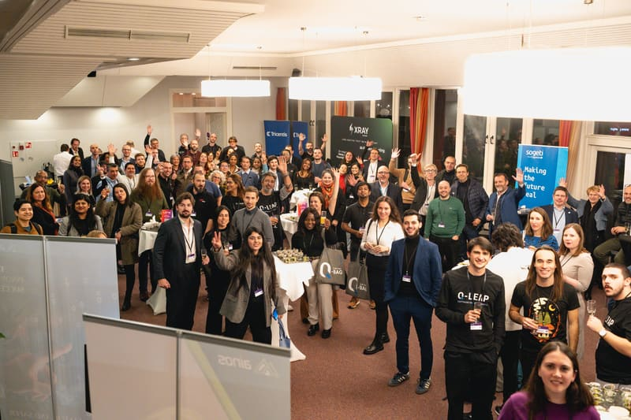

2025
7th edition · Latest
- 400+QA professionals
- 60+Organisations
- 15+Sponsors
Main topics
- AI & quality engineering
- Data quality & synthetic data
- Test automation
- Mobile & performance testing
Speakers includedAntoine Aymer (Sogeti), Liubomyr Bregman (Deloitte Luxembourg), Cristiano Cunha (Xray), Prof. Domenico Bianculli & Prof. Fabrizio Pastore (SnT, University of Luxembourg)
View edition